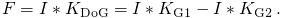
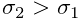
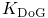
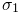
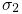
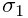
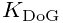
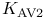
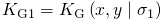
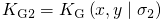

Difference-of-Gaussians filter
The difference-of-Gaussians filter is a feature enhancement algorithm which acts as a band-pass filter. The convolution kernel is formed as the difference of two Gaussian kernels
|  |
where the standard deviation , and the kernels
are given by 
and .
The sizes for both kernels are computed as .
The standard deviations  and  are user-specified
parameters.
are user-specified
parameters.
Although the kernel  is not separable, the filtered image can be obtained by subtracting two images filtered with Gaussian kernels having different standard deviations,
|  |
Threshold for approximate localization of molecules
The threshold value can be specified by users as an expression combining mathematical functions and operators with variables based on the current raw or filtered image. Variables provided by this filter are:
| DoG.I | current raw input image |
|---|---|
| DoG.F | corresponding filtered image |
| DoG.G1 | result of filtering only with  |
| DoG.G2 | result of filtering only with  |
Generated on Sun Oct 4 04:52:35 2015 by LaTeXML ![[LOGO]]()